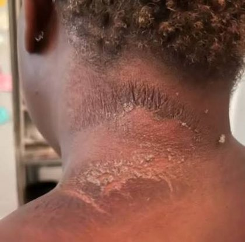

Dermatology Comparison Chart
Clinical Medicine and Surgery I · Exam 1 · Class of 2028
84 conditions across Lectures 2, 3, 4, 5 and 8 · 84 images from the lecture slides
Use the Download as PDF button, top right, to keep this offline — it prints landscape with every row and every photograph intact.
How to use this. Read it left to right for one condition: what it looks like,
what it is called, how it presents and how a patient will actually describe it, what you order first and
what confirms it, what you give first and what comes next, and what you tell them. Read it top to bottom
down one column to compare across conditions — the first-test column is the fastest way to see how
much of dermatology is a clinical diagnosis. Everything here comes from the lecture PowerPoints,
and every picture cites its deck and slide. Where a deck does not state something, the cell says so
rather than being filled in from elsewhere.
| Picture | Name | Common manifestation and how a patient may describe it |
First test & gold standard | First line → second line treatment | Patient education |
|---|---|---|---|---|---|
| Lecture 2 · General Dermatology I — eczema and dermatitis | |||||
 | Atopic dermatitis | Chronic relapsing itchy eruption. Infants cheeks and extensors; children and adults the flexures. Poorly demarcated erythematous plaques with excoriation and lichenification. “It itches all the time and it keeps coming back — especially in the creases of my elbows and knees.” | Clinical diagnosis. Supported by family history, personal atopy, recurrent rash and raised immunoglobulin E (not routinely tested). No routine labs. Patch test if atypical, adult-onset or treatment-resistant. Biopsy if atypical or refractory. Culture purulent or crusted lesions; herpes simplex polymerase chain reaction for painful monomorphic erosions. | 1st: site-appropriate topical corticosteroid — low potency or non-steroid on the face, low to medium on the body, applied sparingly. Emollients throughout. 2nd: tacrolimus or pimecrolimus for sensitive areas; crisaborole; emollient wet wraps for severe flares; hydroxyzine or another antihistamine for itch. Severe: refer — phototherapy, systemic treatment. | Emollient after rinsing. Avoid irritants; fragrance-free skin care. Demonstrate quantity and correct application. Address steroid concerns directly. Written flare and infection action plan. Refer for uncertain diagnosis, moderate-to-severe disease or recurrent infection. Chronic and relapsing, but many improve with age. |
 | Dyshidrotic eczema | Deep-seated tapioca-like vesicles on the palms, soles and sides of the fingers. “I get these tiny deep blisters on my hands and they itch like mad.” | Clinical diagnosis. | 1st: high-potency topical corticosteroid. 2nd: systemic corticosteroid in severe cases. | Avoid triggers and irritants — detergents, solvents, hair lotions or dyes, acidic foods. Lukewarm water and soap-free cleansers. Dry hands thoroughly. Emollient immediately after drying and as often as possible. |
 | Nummular eczema | Discrete coin-shaped plaques, often on the extremities and often in older adults. “I have round itchy patches, almost like coins, on my arms and legs.” | Clinical. Potassium hydroxide preparation if tinea corporis cannot be ruled out. Bacterial culture if lesions look secondarily infected. Patch testing if chronic or recurrent. | 1st: medium to high potency topical corticosteroid for active lesions. 2nd: antihistamines for itch (hydroxyzine, diphenhydramine); treat secondary bacterial infection if present. | Emollients restore the barrier and prevent recurrence. |
 | Irritant contact dermatitis | The commonest form of contact dermatitis. Sharply demarcated in the shape and distribution of the exposure. “My hands are raw and cracked — I wash them all day at work.” | Clinical, from known irritant exposure with obvious demarcation and distribution. In insidious cases it becomes a diagnosis of exclusion. | 1st: avoid the exposure and repair the barrier with emollients. 2nd: antihistamines for itch (hydroxyzine, diphenhydramine). | Sleep in cotton gloves after applying a heavy emollient such as petroleum jelly. |
 | Allergic contact dermatitis | Well-demarcated rash at the site of contact. With urushiol sap (poison ivy) — linear vesicular lesions in multiple stages of healing with excoriation. “I got these streaks of blisters after I was clearing the yard.” | Clinical diagnosis from the history and the typical appearance. Patch testing identifies the allergen. | 1st (limited): soothing measures — oatmeal baths, cool wet compresses, topical astringents — plus a high-potency topical steroid. 2nd (extensive): high-dose oral corticosteroid. | Identify and avoid the allergen. Expect lesions in multiple stages of healing at once. |
 | Seborrheic dermatitis | Greasy yellow scale on erythema in sebum-rich sites — scalp, eyebrows, nasolabial folds, ears, central chest. “My scalp and the sides of my nose are flaky and greasy and it never fully goes away.” | Clinical diagnosis. | 1st: topical antifungal — ketoconazole is the mainstay. Scalp: ketoconazole or selenium sulfide shampoo. Face: ketoconazole cream or lotion. 2nd: steroids early on to reduce the inflammatory response. | Chronic and relapsing, so repeated and long-term use of medication is often required. |
 | Perioral dermatitis | Burning with small erythematous papules around the mouth, sparing the vermilion border. Often follows topical corticosteroid use on the face. “I have a burning rash around my mouth — it started after I used a cream on my face.” | Clinical. Potassium hydroxide if tinea or Candida suspected. Bacterial culture if pustules, crusting or drainage. Patch testing if allergic contact dermatitis suspected. Biopsy if persistent, granulomatous or atypical. | 1st: stop facial topical corticosteroids — continued exposure perpetuates it. Stop non-essential cosmetics and occlusive moisturisers; simplify the routine. Mild disease: topical metronidazole, erythromycin, pimecrolimus or azelaic acid. 2nd: oral tetracycline or doxycycline for extensive or persistent disease. | Warn that the eruption may temporarily worsen after corticosteroid withdrawal — otherwise the patient restarts the steroid and the cycle continues. |
 | Diaper dermatitis | Erythema on the convex surfaces of the napkin area. Fold involvement with satellite lesions suggests candidal overgrowth. “His bottom is red and sore where the nappy sits.” | Clinical. Potassium hydroxide if Candida suspected — budding yeast or pseudohyphae confirm it. Bacterial culture if purulence, bullae, crusting or perianal disease. | 1st: reduce moisture and irritant exposure — frequent changes, gentle cleansing, air exposure, superabsorbent nappies. Thick zinc oxide or petrolatum barrier at every change. 2nd: brief low-potency topical corticosteroid for significant inflammation; topical antifungal if candidal. | The whole previous barrier layer does not need scrubbing away if it is still clean. |
 | Stasis dermatitis | Pruritic erythematous, violaceous or hyperpigmented patches in the gaiter region, with oedema and signs of chronic venous disease. Usually bilateral. “Both my ankles are swollen, itchy and discoloured, and it has been going on for months.” On darker skin the erythema reads violaceous, grey or deep brown — palpate for warmth and oedema. | Clinical — lower-leg dermatitis with oedema and chronic venous disease. Ankle-brachial index or toe pressure before substantial compression, to clarify arterial status. Venous duplex ultrasound if reflux, obstruction or deep vein thrombosis suspected. | 1st: compression therapy is the cornerstone once arterial circulation is established. Leg elevation, walking, calf exercises, weight management, treat the underlying venous disease. Fragrance-free emollients. 2nd: short course of an appropriate topical corticosteroid for active inflammation. | Not cellulitis — bilateral, chronic, itchy and afebrile. Refer to dermatology, vascular surgery or wound care for refractory disease, venous reflux or ulceration. |
| Lecture 2 · Vesiculobullous, papulosquamous, alopecia and xerosis | |||||
 | Bullous pemphigoid | Elderly. Subepidermal split, so tense bullae that do not rupture easily. Nikolsky negative. Mucosal involvement uncommon. May begin with urticarial or oedematous lesions before blistering. “I came up in big tight blisters that don't burst easily.” | Light microscopy — neutrophils aligned in a straight narrow row at the dermal-epidermal junction. Gold standard: biopsy lesional tissue for histopathology and perilesional tissue for direct immunofluorescence. Serum indirect immunofluorescence or ELISA identifies anti-basement membrane zone antibodies. | 1st (mild): ultrapotent topical steroids. 1st (moderate-severe): oral prednisone or doxycycline. Dapsone is particularly effective with mucous membrane involvement. Low-dose methotrexate is safe and effective in the elderly — with folic acid. 2nd (refractory): methotrexate, azathioprine, biologics, intravenous immunoglobulin. | Better prognosis than pemphigus. |
 | Pemphigus (vulgaris) | Middle-aged. Intraepidermal split, so flaccid bullae that rupture easily leaving erosions. Nikolsky positive. Mucosal involvement common and often the first site. “My mouth is full of sores and the blisters on my skin burst as soon as they form.” | Gold standard: biopsy demonstrating acantholysis. Immunofluorescence studies and serum ELISA for pathogenic antibodies are confirmatory. | Urgent treatment needed. 1st: rituximab, or high-dose oral prednisone. 2nd: steroid given with azathioprine or mycophenolate so the patient can be transitioned off. Antibiotics as needed. Supportive: cleansing baths, wet dressings, topical or intralesional glucocorticoids, correction of fluid and electrolyte imbalance. | Worse prognosis than bullous pemphigoid; frequently fatal before corticosteroids. |
 | Psoriasis — plaque | Well-demarcated plaques with thick silvery scale; Auspitz sign on removing scale. Extensor surfaces, scalp, nails. Psoriatic arthritis goes hand in hand with it. “Thick scaly patches on my elbows and knees that flake off.” | Generally clinical, though biopsy may be needed for definitive diagnosis. | 1st (mild): emollients, topical steroids, calcipotriene (vitamin D analogue — quickest action, caution with nephrotoxicity), ultraviolet B phototherapy for smaller stubborn areas. 2nd: salicylic acid, coal tar. Moderate-severe or after failure: methotrexate (with folic acid), acitretin, apremilast, or a biologic — etanercept, infliximab, adalimumab, ixekizumab. | Chronic. Methotrexate always needs folic acid supplementation. |
 | Psoriasis — guttate | Numerous small drop-like papules, widespread over the trunk. “Hundreds of little scaly spots came up all over my back.” | Clinical, as above. | No treatment needed, though phototherapy and topical steroids may be used. | Distinct from plaque psoriasis in its management — the default is observation. |
 | Psoriasis — pustular | Sterile pustules, often on palms and soles. “My palms and soles have come up in little pus-filled spots.” | Clinical, as above. | 1st: acitretin (contraindicated in pregnancy) or methotrexate. If pregnant: high-potency topical steroids. | Pregnancy changes the treatment entirely — ask before prescribing. |
 | Pityriasis rosea | Herald patch first — one large salmon-coloured oval, present a week or two alone — then smaller ovals with a collarette of scale in a Christmas-tree pattern along the skin lines. “I had one big patch, then a week later my whole trunk broke out.” Darker skin: post-inflammatory hyperpigmentation for several months. | Clinical, on the herald patch and the typical pattern. | 1st: self-limited — reassurance. Oral antihistamines and/or cautious topical steroids for itch. 2nd: ultraviolet B phototherapy or natural sunlight if begun in the first week. Aciclovir for severe cases. | Resolves over about six weeks. The herald patch is what separates it from hives, which appear all at once. |
 | Lichen planus | The six Ps — purple, polygonal, pruritic, planar papules and plaques, shiny, with Wickham striae. Flexor wrists, ankles, oral mucosa. Genital involvement in both sexes. “Itchy purple flat-topped bumps on my wrists, and my mouth feels raw.” | Biopsy — band-like infiltration of lymphocytes in the dermis. Also hyperkeratosis without parakeratosis, basal vacuolisation, Civatte bodies, saw-tooth rete ridges. | 1st: superpotent topical steroids. 2nd: topical tacrolimus for oral and vaginal disease; oral steroids in severe cases; PUVA or phototherapy in refractory cases. | Certain medications produce lichenoid reactions — take a drug history. |
 | Lichen simplex chronicus | Thickened lichenified plaque with accentuated skin markings, wherever the patient can reach to scratch. Sustained by the itch-scratch cycle. “I scratch it without thinking, especially at night, and now the skin has gone thick and leathery.” | Clinical. Biopsy atypical, unilateral, nodular, ulcerated or treatment-resistant plaques to exclude neoplasia. Generalised or unexplained pruritus → targeted systemic evaluation. | 1st: break the itch-scratch cycle — education, treat the trigger, emollients, behavioural substitution, nail care, safe physical occlusion. Appropriate potent topical corticosteroid for a limited course. 2nd: calcineurin inhibitor for sensitive sites or maintenance. | Address sleep, anxiety, neuropathic symptoms and the primary dermatosis. Recurrence is common unless the initiating itch is controlled. |
 | Alopecia areata | Discrete smooth round patches of complete hair loss, with exclamation-mark hairs at the edge. Non-scarring. “A round bald patch appeared out of nowhere.” | Clinical, strengthened by dermoscopy — yellow dots, black dots, broken hairs, tapered hairs, short regrowth. Scalp biopsy for scarring alopecia, diffuse atypical loss, or persisting uncertainty. | 1st (adolescents and adults): intralesional steroids. 1st (children 10 and under): topical steroids. | Psychological support is one of the most important factors. Support groups may be offered. |
 | Androgenetic alopecia | Gradual thinning from follicular miniaturisation — temporal recession and vertex in men, widened part in women. Non-scarring. “My hair has been thinning slowly for years.” | Clinical, from history and examination, though additional testing can exclude other causes of alopecia. | Male-pattern: topical minoxidil (mainly effective at the crown); oral finasteride, a 5-alpha-reductase type 2 inhibitor. Works best in combination. Female-pattern: treatments are limited; oral antiandrogens. | About 2% of men on finasteride report reduced libido and erectile function — reversible on stopping. Finasteride is not indicated in women and is contraindicated in pregnancy. |
 | Xeroderma (xerosis) | Dry, rough, cracked skin, worse in winter, typically shins and forearms. “My skin is so dry it cracks and stings.” | Clinical. | 1st: short lukewarm showers, gentle fragrance-free cleanser only where needed, thick ointment or cream within minutes of bathing. 2nd: petrolatum, ceramide-containing products, humectants such as urea or lactic acid. | Keratolytics may sting fissured skin. Most improve with consistent barrier care, but recurrence is expected while environmental exposure, ageing or systemic risk persists. |
| Lecture 3 · Dermatology II — reactive and immune-mediated | |||||
 | Erythema multiforme | Target lesions with three concentric zones — central dusky or necrotic area, pale oedematous ring, outer erythematous rim. Acral distribution, beginning on the extremities. “I have these bullseye-looking spots on my hands and arms.” | Clinical diagnosis; biopsy if uncertain. Herpes simplex polymerase chain reaction, Mycoplasma serology. If erythema multiforme major or systemic concern: complete blood count, comprehensive metabolic panel, liver function tests. | 1st: supportive — analgesia, antihistamines, wound care. Discontinue the offending drug immediately. Topical corticosteroids for localised lesions. Oral aciclovir or valaciclovir if herpes-triggered. 2nd (recurrent): suppressive antiviral therapy, aciclovir 400 mg twice daily. | Herpes simplex virus triggers over 50% of cases. Hospitalise if erythema multiforme major with poor oral intake or extensive mucosal disease. |
 | Dermatitis herpetiformis | Intensely pruritic papules, vesicles and urticarial plaques, symmetrically on knees, elbows, buttocks and back, grouped in a herpetiform pattern. Often bloating and diarrhoea. “Unbelievably itchy blisters on my elbows and knees, both sides, and my stomach has been off.” | Gold standard: perilesional direct immunofluorescence — granular immunoglobulin A at the dermal papillae. Also immunoglobulin A anti-tissue transglutaminase, anti-endomysial antibody, small bowel biopsy. She flagged this in class: most of this block is clinical diagnosis, so a disease with a distinctive test is high-yield. | 1st: dapsone for rapid symptom control. Cornerstone: a strict lifelong gluten-free diet, which is what allows dapsone to be reduced or stopped over one to two years. | Screen every patient for coeliac disease. Also autoimmune thyroid disease and T-cell lymphoma. Rare — 11 to 75 per 100,000, northern European descent, ages 30 to 40. |
 | Acanthosis nigricans | Velvety hyperpigmented thickening of flexural skin — neck, axillae, groin. “The skin on my neck has gone dark and velvety and it won't wash off.” | Clinical diagnosis. Then haemoglobin A1c, fasting insulin, lipid panel, polycystic ovarian syndrome workup. | 1st: treat the underlying cause — insulin resistance. 5 to 10% weight loss improves it. Metformin. 2nd: topical retinoids for cosmetic improvement. | A metabolic warning sign, not a hygiene problem. Sudden onset in an adult → urgent evaluation for gastrointestinal malignancy, especially gastric adenocarcinoma. |
 | Epidermolysis bullosa | Blistering and skin fragility from minimal trauma, evident at or shortly after birth. Caused by a mutation in structural proteins. “His skin blisters and tears wherever he is handled.” | Gold standard: transmission electron microscopy with immunofluorescence antigen mapping. Supported by a genetic panel and nutritional labs. | Supportive. Wound care, nutrition, infection control, pain management. | Referral to essentially every specialty given the multisystem burden. Early palliative care integration, genetics counselling and family support in severe forms such as Herlitz junctional disease. |
 | Urticaria | Transient pruritic wheals, with or without angio-oedema. An individual wheal resolves within 24 hours, blanches fully and migrates. “Itchy welts come up and move around, and each one is gone by the next day.” | Clinical. Biopsy if lesions persist beyond 24 hours — that suggests urticarial vasculitis. Thyroid-stimulating hormone, complement C4, tryptase, specific immunoglobulin E. | 1st: second-generation antihistamine — cetirizine, loratadine, fexofenadine. Short oral prednisone 40–60 mg for 5 days in severe acute disease. Intramuscular epinephrine 0.3 mg immediately for anaphylaxis. 2nd (chronic): scheduled non-sedating antihistamine up to 4× standard dose; add an H2 blocker; then omalizumab 300 mg every 4 weeks; ciclosporin. | Acute versus chronic is defined at six weeks. About half of chronic urticaria resolves within a year, and over half of cases have no identifiable trigger. |
 | Erythema nodosum | Tender erythematous nodules, bilateral on the anterior shins, that do not ulcerate. The commonest panniculitis. Often preceded by fever and arthralgia. “Painful red lumps came up on both my shins and I ached all over first.” | Clinical; deep incisional biopsy if atypical (septal panniculitis without vasculitis). Antistreptolysin O titre, chest radiograph, tuberculin or interferon gamma test, inflammatory markers, colonoscopy, pregnancy test where relevant. | 1st: rest, leg elevation, compression stockings, a nonsteroidal anti-inflammatory drug. 2nd: potassium iodide for idiopathic and recurrent disease; short corticosteroid course once infection is excluded. | It is a reaction pattern, not an isolated disease — identifying and treating the trigger is the point. Löfgren syndrome (with ankle arthritis and hilar nodes) has the best sarcoid prognosis, over 90% remitting. |
 | Granuloma annulare | Annular ring of flesh-coloured or erythematous papules, commonly dorsal hands and feet. No scale on the border — which is what separates it from tinea. “A ring of little bumps on the back of my hand. It doesn't itch.” | Clinical; biopsy for confirmation shows palisading granulomas with central necrobiosis and mucin. | Localised: benign and self-limiting — treat for cosmesis or discomfort. Intralesional or topical corticosteroid. Generalised: phototherapy or systemic therapy via dermatology. | Localised disease is benign and about half resolve within two years; no malignant potential. Generalised disease in an adult over fifty → screen for diabetes, thyroid disease, dyslipidaemia and lymphoma. |
 | Pyoderma gangrenosum | Rapidly expanding painful ulcer with an undermined violaceous border, beginning as a pustule or nodule. Lower extremities most common. Pathergy — it worsens with trauma. “A small spot turned into a big painful ulcer within days, and it got worse after they cleaned it out.” | A diagnosis of exclusion — no gold standard test. Biopsy the ulcer EDGE and take wound cultures to exclude malignancy and infection. Serum protein electrophoresis, antineutrophil cytoplasmic and antinuclear antibodies, colonoscopy. | Wound care (critical): avoid debridement — pathergy worsens the ulcer. Moist dressings, non-adherent contact layers. Topical tacrolimus or clobetasol to the wound edges for pain. 1st systemic: prednisone 0.5–1 mg/kg/day for acute rapid progression, or ciclosporin 3–5 mg/kg/day. 2nd: infliximab 5 mg/kg — approved with inflammatory bowel disease. | Do not debride. Screen for inflammatory bowel disease (25–50%), haematologic malignancy, monoclonal gammopathy, rheumatoid arthritis. The bullous variant associates with acute myeloid leukaemia. |
 | Acne rosacea | Persistent central facial erythema with flushing and telangiectasias, and no comedones — which is what separates it from acne vulgaris. Four subtypes: erythematotelangiectatic (commonest), papulopustular, phymatous, ocular. “My face goes red and burns, especially with wine or hot drinks.” | Clinical. Antinuclear antibody if lupus is a consideration — it helps rule out autoimmune disease; a positive result only means more testing is needed. | 1st: topical metronidazole. Alternative: azelaic acid — effective but more drying, and these patients already have an impaired barrier. Ivermectin 1% cream is superior where there is a Demodex burden. Brimonidine for erythema. Sub-antimicrobial doxycycline; isotretinoin for refractory disease. | Chronic — therapy controls rather than cures. Trigger diary, gentle non-irritating skincare, daily sun protection. Ocular rosacea with visual symptoms → urgent ophthalmology. |
 | Hyperhidrosis | Primary focal: bilateral, focal (palms, soles, axillae), adolescent onset, absent during sleep. Secondary: generalised, may be asymmetric, can occur at night. “My hands drip so much I smudge everything I write.” | Clinical + Hyperhidrosis Disease Severity Score. Minor's starch-iodine test maps the distribution; gravimetric measurement quantifies it. Generalised or nocturnal → secondary workup: 24-hour urine metanephrines and catecholamines, thyroid-stimulating hormone. | 1st: aluminium chloride topically at night. 2nd: glycopyrronium 2.4% cloth once daily (axillary), or an oral anticholinergic. 3rd: botulinum toxin A; microwave thermolysis. Last resort: endoscopic thoracic sympathectomy for refractory palmar disease. | It is a medical condition, not poor hygiene or anxiety. Quality-of-life impairment is comparable to severe psoriasis. Botulinum toxin lasts 3–6 months and needs repeating; it can be cost-prohibitive. Moisture-wicking clothing; set realistic expectations. |
| Lecture 3 · Severe drug reactions and photodermatology | |||||
 | Stevens-Johnson syndrome | Prodrome of fever, malaise and upper respiratory symptoms 1–3 days before the skin findings. Painful erythematous macules and target lesions starting on the trunk. Mucosal erosions — oral, ocular, genital — in over 90%. Nikolsky positive. Epidermal detachment under 10% body surface. “I had flu symptoms, then my mouth and eyes became raw and my skin started peeling.” | Pathognomonic: punch biopsy showing full-thickness epidermal necrosis with dermal-epidermal junction separation. Complete blood count, metabolic panel, liver function, urea and creatinine. Blood cultures if secondary infection suspected. Chest radiograph. Ophthalmology with slit-lamp. SCORTEN scoring. | 1st and most important: withdraw the causative drug immediately — earlier withdrawal is strongly associated with improved survival. Burn unit or intensive care. Aggressive fluids, temperature control, non-adhesive dressings, nasogastric nutrition, infection surveillance. Avoid silver sulfadiazine (sulfonamide cross-reaction). Antibiotic prophylaxis is NOT recommended. 2nd: intravenous immunoglobulin 1 g/kg/day ×3 or ciclosporin 3–5 mg/kg/day; etanercept emerging. | 1–7 per million per year — uncommon but deadly, so it has to be known. Culprits: aromatic anticonvulsants, sulfonamides, allopurinol, oxicam nonsteroidals, nevirapine. Lifelong avoidance of the drug class, medical alert bracelet, counsel first-degree relatives on shared genetic risk (HLA-B*15:02 with carbamazepine, HLA-B*58:01 with allopurinol). |
 | Toxic epidermal necrolysis | The same spectrum, at its severe end. High fever, stinging eyes, painful swallowing 1–3 days before. Painful erythema → flaccid bullae → confluent detachment over 30% body surface, Nikolsky positive, “wet parchment”. Mucosal erosions nearly universal. “My skin is coming off in sheets.” | As for Stevens-Johnson syndrome. SCORTEN within 24 hours of admission and repeated on day 3 — age over 40, malignancy, heart rate over 120, detachment over 10%, urea over 28 mg/dL, bicarbonate under 20 mEq/L, glucose over 252 mg/dL. Score 5+ → 90% predicted mortality. | Burn unit or intensive care admission is mandatory. Immediate withdrawal of all suspect drugs. Fluid resuscitation as for major burns. Non-adhesive biological dressings. Early enteral feeding. 1st drug: ciclosporin 3–5 mg/kg/day — strongest current evidence, early initiation preferred. 2nd: intravenous immunoglobulin, etanercept. Opioids and gabapentin for pain. | Mortality 30–35%. Antibiotic prophylaxis is NOT recommended — treat infections when confirmed. Palliative care involvement at SCORTEN 5 or more. Survivors face sicca syndrome, lung disease and psychological trauma. |
 | Sunburn | First degree: erythema, warmth, tenderness, no blistering, resolving in 3–5 days with desquamation. Second degree: blistering, intense pain, oedema, 1–2 weeks. Onset 3–5 hours after exposure, peaking at 12–24 hours. “Sun poisoning” — fever, chills, nausea, dehydration — with large body surface involvement. | Clinical. | 1st: cool compresses and cool (not cold) water immersion. Nonsteroidal anti-inflammatory drugs started early reduce prostaglandin-mediated pain. Oral hydration; intravenous fluids if severe. 2nd: topical moisturisers — aloe vera, soy — soothing but do not alter healing. Topical steroid has limited evidence, possibly if within 6 hours. | Do not pop blisters — intact blisters are protective. Hospitalise for severe blistering over 20% body surface, systemic toxicity, or extremes of age. Broad-spectrum SPF 30+, reapply every 2 hours; avoid 10 AM–4 PM; tanning beds are Group 1 carcinogens. |
 | Drug-induced photosensitivity | Phototoxicity: non-immunologic, dose-dependent, occurs on first exposure, within hours, looks like an exaggerated sunburn confined to exposed skin. Photoallergy: immunologic type IV, dose-independent, needs sensitisation, eczematous and pruritic, extends beyond sun-exposed skin, can persist after the drug stops. “I burned badly after barely any sun since starting that antibiotic.” | Thorough drug history including over-the-counter and topical products. Phototesting — minimal erythema dose to ultraviolet A and B before and after drug withdrawal. Gold standard for photoallergy: photopatch testing — duplicate sets, one irradiated with ultraviolet A at 5 J/cm². Reaction on the irradiated patch only = photoallergy; both = contact allergy. | 1st: identify and discontinue or substitute the offending agent where feasible. Strict photoprotection — SPF 50+ broad-spectrum, physical blockers (zinc oxide, titanium dioxide). 2nd: phototoxicity — supportive care. Photoallergy — topical or short systemic corticosteroid, antihistamine. Persistent light reaction — narrowband ultraviolet B desensitisation. | Phototoxic drugs: tetracyclines (especially doxycycline), fluoroquinolones, amiodarone, thiazides, furosemide, voriconazole, nonsteroidals, psoralens, St John's Wort. Photoallergic: sunscreen chemicals (oxybenzone), sulfonamides, topical antihistamines, phenothiazines. Avoid medication during peak sun hours. |
 | Photodermatitis (phytophotodermatitis) | Furanocoumarins from limes, celery, parsley, wild parsnip or fig plus ultraviolet A. Linear or streaked hyperpigmentation after lime juice and sun — “margarita dermatitis”. Painful blistering in the acute phase. Berloque dermatitis: drip-pattern hyperpigmentation on the neck from bergamot oil. Chronic actinic dermatitis: persistent eczematous eruption in chronically exposed skin in older males. | Detailed exposure history — plants, topicals, fragrances, medications. Photopatch testing for photocontact allergy. Antinuclear antibody panel if lupus suspected. Biopsy if uncertain. Photodermatitis spares the nasolabial folds; seborrhoeic dermatitis involves them. | 1st: avoid the contactant and ultraviolet exposure concurrently. Acute blistering — cool compresses, wound care, mid-potency topical corticosteroid. 2nd: hyperpigmentation — reassurance, it fades over months; hydroquinone or azelaic acid if persistent. Chronic actinic dermatitis — potent steroids, tacrolimus, hydroxychloroquine, narrowband ultraviolet B or PUVA, azathioprine. | Recognise photosensitising plants, especially in landscaping, gardening and food preparation. Wash skin immediately after plant contact before sun exposure. Year-round sun protection prevents the pigment darkening further. |
 | Polymorphous light eruption | The commonest idiopathic photodermatosis (10–20% of the population). 2–5 mm erythematous papules on décolletage, forearms and dorsal hands, appearing 30 minutes to hours after ultraviolet exposure, in the first sunny days of spring. Spares chronically exposed areas. Resolves in 7–10 days without scarring; “hardening” by late summer. “Every spring the first proper sun brings out an itchy rash, and it settles by July.” | Largely clinical — history and morphology. Antinuclear antibody panel is MANDATORY to exclude lupus, especially anti-Ro/SSA and anti-La/SSB. Phototesting reproduces the eruption in 50–60%. Biopsy shows a perivascular lymphocytic infiltrate with dermal oedema — supportive, not pathognomonic. | 1st (acute): avoid further ultraviolet exposure, cool compresses, moderate-potency topical corticosteroid, oral antihistamine. Short prednisolone 0.5 mg/kg/day ×4–5 days for severe episodes. 1st (preventive): prophylactic narrowband ultraviolet B, 3×/week for 5 weeks in spring — induces tolerance and is the most effective preventive strategy. 2nd: hydroxychloroquine 200 mg twice daily for refractory cases. | Broad-spectrum SPF 50+ including ultraviolet A blockers. Recurs each spring and often improves with summer hardening. Strong hereditary component — up to 50% family concordance. |
 | Solar lentigo also Lecture 8 | Well-defined light-to-dark brown macules with irregular borders that coalesce at sites of severe sunburn, from under 1 mm to several centimetres, on chronically exposed skin. 90% of people by age 50. “Age spots on the backs of my hands and my shoulders.” | Dermoscopy — finger-like projections and a “moth-eaten” border. Biopsy if atypical or uncertain on dermoscopy, to exclude lentigo maligna (asymmetric, irregular border and colour, structureless pigment). Reflectance confocal microscopy where biopsy is deferred. | Treatment is not necessary. Cosmetic removal by preference: 1st: cryotherapy (5–10 second freeze), or quality-switched Nd:YAG, intense pulsed light or fractional laser. 2nd: topical hydroquinone 2–4%, azelaic acid, kojic acid, retinoids, tranexamic acid — slower but less post-procedure pigmentation risk. Chemical peels. | Benign, but monitor for change. Daily SPF 30+ prevents new lesions. Annual full-body skin examination. Associated with actinic keratosis, squamous and basal cell carcinoma, and melanoma — it marks cumulative sun damage. Over time may progress into lichenoid keratoses. |
 | Actinic keratosis | Rough, scaly, erythematous papules and plaques on sun-exposed skin — face, scalp, dorsal hands, forearms. Skin-coloured to red-brown, “sandpaper” texture on palpation, typically 2–10 mm. “Rough scaly spots I can feel better than I can see.” | Clinical. Biopsy if indurated, ulcerated, tender or bleeding — concerning for invasive squamous cell carcinoma. | 1st (lesion-directed): cryotherapy, 2–3 freeze-thaw cycles — standard of care for isolated lesions. Shave excision or curettage with electrodessication. 1st (field-directed, for multiple or confluent): 5-fluorouracil 5% for 2–4 weeks; imiquimod 3.75% or 5% twice weekly ×16 weeks; photodynamic therapy; tirbanibulin 1%; diclofenac 3% gel for mild disease. | Field cancerization — the clinically normal skin around a lesion already carries mutations, which is why confluent disease gets field therapy. 0.025–16% annual transformation risk per lesion. Organ transplant recipients carry 65× the risk. Hypertrophic lesions have higher malignant potential. |
 | Dermatoheliosis (photoaging) | Coarse deep wrinkles, leathery rough texture, mottled dyspigmentation, telangiectasias, persistent erythema. Cutis rhomboidalis nuchae on the posterior neck is the classic marker of severe photoaging. Sun-protected skin looks far younger. “One side of my face looks a decade older — the side that was by the car window.” | Clinical — chronic sun exposure with the characteristic distribution. Biopsy confirms solar elastosis, the hallmark. Dermoscopy for individual lesions. Ultraviolet photography quantifies subclinical damage. Genetic testing if xeroderma pigmentosum suspected. Annual full-body skin examination. | 1st: tretinoin 0.025–0.1% — the only agent approved by the Food and Drug Administration for photoaging. Start low, titrate; expect initial retinoid dermatitis; minimum 6–12 months for visible results. 2nd: vitamin C 10–20%, niacinamide, hydroquinone 2–4%, azelaic/kojic/tranexamic acid. Chemical peels, ablative or non-ablative laser resurfacing, intense pulsed light, radiofrequency, microneedling. | Broad-spectrum SPF 30+ daily is the single most evidence-supported intervention. Apply as the last skincare step before makeup, 2 mg/cm² (about a teaspoon for face and neck), reapply every 2 hours. Largely preventable; established change can still be meaningfully improved. Tanning is not healthy — a tan is a UV injury response. |
| Lecture 4 · Cutaneous Bacterial Infections | |||||
 | Acne vulgaris | Polymorphic. Comedones are the hallmark — open (blackheads) and closed (whiteheads), non-inflammatory — plus inflammatory papules, pustules and nodules. Face, neck, chest, upper back, upper arms. Systemic symptoms absent. “Spots that keep coming, and they flare before my period.” | Clinical. Culture only if there is no response to treatment. Pre-treatment assessment: type and severity, skin type, scarring, menstrual and hyperandrogenism history, current regimen, psychological impact. | Comedonal: topical retinoid (adapalene, tazarotene, tretinoin); azelaic or salicylic acid if not tolerated. Mild papulopustular: topical antimicrobial + retinoid, or benzoyl peroxide + topical antibiotic. Moderate: topical retinoid + oral antibiotic (doxycycline, minocycline; sarecycline; erythromycin if tetracycline contraindicated) + benzoyl peroxide. Severe nodular: the same triple, or oral isotretinoin monotherapy, 16–20 weeks. Hormonal: combined oral contraceptive for hyperandrogenism or unresponsive disease. | Benzoyl peroxide with every antibiotic to cut resistance; oral courses 3–4 months only. Separate tretinoin and benzoyl peroxide by 3+ hours. Wash no more than twice daily, gentle cleanser, warm not hot water. Non-comedogenic products. Improvement takes 4–6 weeks; back and chest 3–4 months. Isotretinoin: pregnancy tests before, monthly, and 5 weeks after; iPledge; one month dispensed at a time; two forms of contraception; no blood donation. |
 | Folliculitis | Small papules or pustules on an erythematous base, each pierced by a central hair. Scalp, thighs, trunk, axilla, inguinal area. Abrupt eruption, afebrile, no systemic involvement. “Little pimples with a hair coming out of the middle.” | History and clinical manifestations. Resistant cases: culture and Gram stain from an unroofed pustule; potassium hydroxide wet mount using a plucked hair to exclude dermatophyte folliculitis; nasal swab of patient and family for Staphylococcus aureus colonisation; biopsy. | 1st: moist heat, antibacterial soaps, good glycaemic control, good skin hygiene, loose clean clothing. Mild infection — topical mupirocin, clindamycin or erythromycin. Recurrent (carrier state): mupirocin ointment in the nasal vestibule twice daily ×5 days. Extensive: oral cephalexin or dicloxacillin. If MRSA: trimethoprim-sulfamethoxazole, ciprofloxacin or linezolid. | Instruct the patient not to squeeze pustules. Superficial pustules rupture and drain spontaneously; deep lesions may be incised and drained. Risk factors: obesity, poor hygiene, occlusive clothing, heat and humidity, immunocompromise, corticosteroids, diabetes, nasal carriage. |
 | Pseudomonas (“hot tub”) folliculitis | Follicular papules, vesicles and pustules that can crust, primarily on trunk, extremities and buttocks, sparing face, neck, soles and palms. Onset 8 hours to 5 days after exposure. Pruritic or tender. “A day after the hot tub I broke out in an itchy rash everywhere my swimsuit covered.” | Usually clinical. Bacterial culture from a pustule or a sample of the contaminated water if unclear or treatment-resistant. | 1st: most cases resolve without specific treatment, clearing in 2–10 days. Dilute acetic acid 5% wet dressing — 3 tablespoons in a pint of water, 20 minutes, 2–4× daily. 2nd: ciprofloxacin for widespread or resistant cases. | Showering after contact does NOT prevent infection. Continuous water filtration to remove dead skin, frequent monitoring of chlorine levels, frequent changing of the water. Caused by Pseudomonas aeruginosa, a Gram-negative organism, from inadequate chlorination. |
 | Pseudofolliculitis barbae | Foreign body reaction, not an infection. The cut hair curves into the follicular wall and re-penetrates the skin, forming a tender red papule with a central hair shaft. Commonly in Black males with tightly curled facial hair, or anyone who shaves curlier hair. “I get sore ingrown bumps every time I shave.” | Clinical diagnosis. | 1st: stop shaving if possible; clean razors; avoid “lift-and-cut” razor systems; mild razor angles, single or at most double blades. Alternatives: chemical depilatories; laser-assisted permanent hair removal. 2nd (topical): tretinoin relieves hyperkeratosis; mild corticosteroid for inflammation; eflornithine cream reduces facial hair; topical clindamycin, benzoyl peroxide or erythromycin to reduce colonisation. Oral tetracycline. | The shaving technique itself has to change — treating the papules alone will not resolve it. Secondary infection can produce pustules and abscess. |
 | Furuncle | A painful, fluctuant, erythematous nodule — a deep abscess of a hair follicle and adjacent subcutaneous tissue. Firm tender nodule with a single opening and a surrounding zone of erythema; often fluctuant, may drain spontaneously. Back of neck, face, axillae, buttocks. “A painful boil on the back of my neck.” | Clinical appearance. Organism identified by aspiration or incision and drainage. | 1st: warm compresses are usually sufficient for small furuncles. No antibiotics if afebrile with a single lesion under 5 mm. Oral antibiotics if: a lesion under 5 mm fails drainage, a single lesion is over 5 mm, expanding cellulitis, immunocompromise, or endocarditis risk. Empiric: dicloxacillin or cephalexin. If MRSA: trimethoprim-sulfamethoxazole, clindamycin or doxycycline. Incise and drain large furuncles and culture the material. | Endocarditis prophylaxis for at-risk patients. Recurrent furunculosis — address obesity, diabetes and nasal Staphylococcus aureus carriage. |
 | Carbuncle | Two or more confluent furuncles with separate heads. Extremely painful. Several loculated abscesses, superficial pustules, necrotic plugs and sieve-like openings draining purulent material. Systemic symptoms — malaise, chills, fever — are more common than with a furuncle. “A cluster of boils that have joined together, and I feel unwell with it.” | Clinical appearance; organism via aspiration or incision and drainage. | 1st: incision and drainage is the mainstay of therapy. Endocarditis prophylaxis for at-risk patients. Oral antibiotics: dicloxacillin or cephalexin. If MRSA: trimethoprim-sulfamethoxazole, doxycycline or clindamycin. | Differential: cystic acne, folliculitis, hidradenitis suppurativa. |
 | Hidradenitis suppurativa | Also called acne inversa. Inflammation of cutaneous apocrine glands — axilla (most common), groin, breasts, perineum. Recurrent painful or suppurative lesions more than twice in 6 months. Nodules, sinus tracts, abscesses, atrophic or meshlike scarring, and the double comedone (a blackhead with two or more openings). “Painful lumps under my arms that keep coming back and now they leak.” | Primarily clinical. Three key elements: typical lesions + characteristic distribution (axilla and groin) + recurrence more than twice in 6 months. Biopsy is not usually required; it shows follicular occlusion by keratinous material, folliculitis and apocrine gland destruction. | Prevention: avoid heat, daily antibacterial soap / chlorhexidine / benzoyl peroxide wash, weight loss, avoid constrictive clothing and friction, smoking cessation is essential, laser hair removal. 1st: mild topical steroid with topical antibiotic (clindamycin, erythromycin). 2nd: intralesional triamcinolone for draining sinuses; oral prednisone; oral retinoid; spironolactone; combined oral contraceptive. 3rd: infliximab for disease unresponsive to corticosteroids. Analgesia: codeine, then fentanyl patch for resistant pain. Definitive: incise and drain large fluctuant cysts; wide excision gives the best chance of permanent cure. | Long-term systemic antibiotics have often poor outcomes. Predisposing: hot weather, perspiration, obesity, apocrine duct obstruction, secondary infection, smoking. |
 | Erythrasma | Chronic superficial infection of intertriginous skin by Corynebacterium minutissimum, invading the upper third of the stratum corneum under heat and humidity. Usually asymptomatic, may be pruritic. Inner thighs, crural region, scrotum, and between the 4th and 5th toes. Diabetics are high risk. “A brownish patch in my groin that doesn't itch much.” | Gold standard: “coral-red” fluorescence under a Wood's lamp (ultraviolet light). | 1st (localised): topical erythromycin or clindamycin. Widespread: oral erythromycin or clarithromycin. If yeast also present: add an antifungal cream (miconazole). | Keep the area clean and dry. Avoid excessive heat or moisture. Maintain a healthy body weight and good hygiene. Differential: cutaneous candidiasis, contact dermatitis, psoriasis, tinea. |
 | Impetigo — non-bullous | The more common form. A macule rapidly becomes a vesicle or pustule and ruptures; serous contents dry to a honey-coloured adherent crust over an erosion. Face and extremities. Spreads by extension and self-inoculation from scratching. Regional lymphadenopathy common. VERY contagious. “Golden crusty sores around his nose and mouth that keep spreading.” | Clinical appearance. Culture if: high risk for MRSA (health-care worker, teacher), or acute post-streptococcal glomerulonephritis is present. | 1st (topical, limited non-bullous): mupirocin ointment — adequate for most cases, as effective as oral with fewer side effects. Remove crusts before applying. Retapamulin is licensed but far more expensive. 1st (oral): dicloxacillin, amoxicillin-clavulanate, cephalexin — drug of choice in children, clindamycin if penicillin allergic. If MRSA: clindamycin, trimethoprim-sulfamethoxazole, doxycycline (over 8 years old). | Self-limiting but may last weeks or months. Isolate children until treatment has been underway 24–48 hours. Do not share towels, clothing, bath water, washcloths or razors. Gentle cleansing with antibacterial soap. Acute post-streptococcal glomerulonephritis may follow — especially ages 3–7 — and antibiotics do NOT prevent it. |
 | Impetigo — bullous | Exclusively Staphylococcus aureus, releasing epidermolytic toxins that split the epidermis. Small or large superficial fragile bullae, tense clear or cloudy, on intact skin or invading pre-existing lesions such as eczema. Rupture leaves shallow moist erosions with remnant collarettes. Lymphadenopathy uncommon. | Clinical appearance, as above. Differential: thermal burn, allergic contact dermatitis, herpes simplex or zoster. | As for non-bullous impetigo. Coverage must include staphylococci and streptococci. | The bullous form is the one that secondarily invades existing skin disease such as eczema — that is a secondary bacterial infection rather than a primary one. |
 | Ecthyma | Not common. Begins as a vesicle or pustule over inflamed skin and deepens into dermal ulceration with a thicker grey-yellow crust. Usually the lower extremities. Regional lymphadenopathy common; heals slowly and leaves a scar. “A punched-out sore on my shin with a thick crust that isn't healing.” | Clinical appearance, as for impetigo. | As for impetigo, covering staphylococci and streptococci. | Predisposed by pre-existing tissue damage (bites) and immunocompromise such as diabetes; crowding and poor hygiene increase risk. The depth is what separates it — it scars, ordinary impetigo does not. |
 | Erysipelas | Infection of the upper dermis extending to superficial cutaneous lymphatics — a superficial cellulitis. Group A streptococcus. Sudden onset with malaise, myalgia, chills and high fever (38–40°C) within 48 hours. A plaque raised above the surrounding skin with a CLEAR LINE OF DEMARCATION. Lower extremities in 80%; face is the other common site. “Red streaks” toward lymph nodes. “My face went bright red with a sharp edge to it and I spiked a fever.” | Clinical diagnosis in classic presentation. Leukocytosis, raised erythrocyte sedimentation rate and C-reactive protein are common but not diagnostic. Blood and tissue cultures are not cost effective — extremely low yield. Imaging is low yield and not indicated. | Prompt treatment matters — progression can be rapid. 1st: penicillin V. If penicillin allergic: clindamycin. Supportive: symptomatic treatment of aches and fever, hydration, cold compresses, elevation of the affected limb. | Risk factors: impaired lymphatic drainage (mastectomy), immunocompromise, athlete's foot, obesity, trauma, pre-existing impetigo. Treat the tinea pedis — it is the portal of entry and predicts recurrence. The inciting event is often not recalled. |
 | Cellulitis | Acute inflammation of the deeper dermis and subcutaneous tissue. Group A beta-haemolytic streptococci or Staphylococcus aureus. All four cardinal signs — erythema, warmth, oedema, tenderness. Most common site the lower leg, almost never bilateral. Borders are NOT elevated or demarcated — which rules out erysipelas. May be purulent or non-purulent. “My leg is hot, red, swollen and sore, and the edge just fades out.” | Usually clinical. No workup if limited involvement, minimal pain, no systemic signs and no risk factor for serious illness. Serious infection: blood cultures and skin punch biopsy; complete blood count (leukocytosis); creatine phosphokinase if muscle damage. Plain films, computed tomography or magnetic resonance imaging to evaluate for underlying fasciitis or osteomyelitis. | Non-purulent: dicloxacillin or cephalexin; clindamycin if penicillin allergic. Purulent — consider MRSA: trimethoprim-sulfamethoxazole, doxycycline, clindamycin or linezolid. Oral versus intravenous depends on presentation. Devitalised tissue — tense, cyanotic, necrotic, bronzed or blanched — is not perfused, so antibiotics never reach it. It needs surgical debridement. | May look and feel worse during the first day — sudden destruction of pathogens releases enzymes that increase local inflammation. Fever usually resolves in 24 hours. Fever beyond 48 hours → change the antimicrobial, guided by culture. Inflammation settles over 1–2 weeks. Complications: gangrene and sepsis in the immunocompromised. |
 | Abscess | A collection of purulent material within the dermis and deeper tissues, usually from traumatic inoculation of bacteria — unlike a furuncle, which arises from an infected hair follicle. Early: erythematous tender nodule. Later: purulent material collects centrally and may drain spontaneously. Axilla, vulva, perianal, head, neck, buttocks, extremities, perineum. Often polymicrobial; Staphylococcus aureus commonest. “A painful lump that came up where I injured myself, and now it's got a head on it.” | Clinical. Culture the drained material, with consideration of MRSA. | If it drains spontaneously: warm soaks; broad-spectrum antibiotics considering MRSA, then narrow to the culture result. If it does not drain: surgical incision and drainage. | The aim is to eradicate infection and prevent recurrence. |
 | Acute paronychia | Infection of the soft tissue around the fingernail (perionychium), starting as cellulitis and progressing to abscess. Usually 2–5 days after trauma. Rapid onset of an erythematous oedematous area; advanced cases collect purulent fluid under the nail folds. Staphylococcus aureus, Streptococcus pyogenes. “My finger went red and throbbing a couple of days after a manicure.” | Usually clinical. Gram stain and culture to identify the bacterial cause; potassium hydroxide to rule out candida; Tzanck smear to rule out herpetic whitlow. | 1st (mild): warm water compresses or soaks, 20 minutes 3× daily. Severe: incise and drain; obtain cultures to rule out MRSA. Oral antibiotics — amoxicillin-clavulanate, cephalexin, or clindamycin if exposed to oral flora from nail biting. | Predisposing: manicure, ingrown nail, hangnail, nail biting. Differential: onychomycosis, felon, herpetic whitlow, pseudomonal nail infection, squamous cell cancer of the nail. |
 | Chronic paronychia | An inflammatory reaction of the proximal nail fold to irritants and allergens, possibly eczematous. Candida albicans is the commonest organism. Oedematous, erythematous, tender nail folds without fluctuance; nail plates thicken and discolour; cuticles separate from the plate. Present at least 6 weeks. “My nail folds have been puffy and sore for months and my nails look ruined.” | Clinical, with a history of continuous hand immersion in water or chemical contact. | 1st: treat the underlying inflammation and infection; keep the hands as dry as possible; broad-spectrum topical antifungal (miconazole). 2nd: oral antifungal in severe cases (fluconazole). | Predisposing: diabetes, laundry workers, cleaners, cooks, bartenders, dishwashers, swimming. The timescale is what separates it from acute paronychia — days versus six weeks. |
 | Necrotizing fasciitis | Bacterial infection of the tissue surrounding muscle, nerve, fat and vessels, leading to necrosis. Polymicrobial; Group A streptococcus common. Difficult to recognise early but rapidly progressive. The clue: unrelenting pain OUT OF PROPORTION to the physical examination. Later: skin changes red-purple to blue-grey, bullae with thick pink or purple fluid, cutaneous gangrene, and the area stops being tender because the superficial nerves have been destroyed. Fever 38.9–40.5°C, tachycardia, hypotension, septic shock. “The pain is far worse than it looks — and now it's gone numb.” | A surgical emergency with high mortality. Laboratory tests and imaging must NOT delay surgical intervention. Complete blood count with differential, chemistry, arterial blood gas, urinalysis, blood and tissue cultures. Ultrasound demonstrates air bubbles in soft tissue; magnetic resonance or computed tomography localises site and depth. Gas may be present with Clostridium perfringens; it is NOT present with Group A streptococcus. | 1st: aggressive surgical debridement of necrotic tissue. Admit to a surgical intensive care unit (burn or trauma centre). Team approach with consultations. Antibiotics: broad-based, covering aerobic Gram-positive and Gram-negative organisms and anaerobes. | Commonly misdiagnosed as cellulitis, sent home, and returns worse. Consider it if there is no response to antibiotics within 48 hours. Risk factors: trauma, burns, surgery, immunosuppression, renal failure, alcoholism, dental infection, injection drug use. Male > female. |
| Lecture 5 · Dermatological Infestations | |||||
 | Scabies | Itching almost always, and severe, with intense nocturnal pruritus. Insidious onset. Excoriations and eczematous dermatitis in interdigital webs, sides of fingers, volar wrists, elbows, axillae, scrotum, penis, labia, areolae. Head and neck spared in healthy adults — but involved in infants, the elderly and the immunocompromised, who also get indurated crusted nodules on the trunk. Pathognomonic: a thin, thread-like linear or J-shaped BURROW, 1–10 mm. “The itch is unbearable at night and it's driving me mad.” | Definitive: microscopic identification of the organism, ova or faeces. Skin scraping — number 15 blade, unexcoriated burrow or papule, swab with alcohol, apply mineral oil, scrape firmly onto a slide. Dermoscopy — the “delta-wing jet” sign. Burrow ink test — blue/black ink applied; a zigzag line running away from the lesion is positive. | 1st: topical permethrin overnight to the ENTIRE skin surface with attention to creases, and a SECOND APPLICATION ONE WEEK LATER. Non-pharmacologic: wash bedding and clothing at 60°C or bag for 14 days in a warm area; treat all infected persons in the family or group. Hyperkeratotic or immunosuppressed: ivermectin every 2 weeks for 2–3 doses + topical permethrin every 3 days to weekly. Pregnancy: treat only if documented. | Relief in about 3 days, but rash and itch may last up to 4 weeks (triamcinolone if needed). Excessive washing with harsh soap worsens irritation. Pruritus appears 4–6 weeks after a first infestation but 2–3 days after reinfestation. Complications: staphylococcal superinfection (may lead to sepsis), persistent post-scabietic papules, psychological effects. |
 | Crusted (hyperkeratotic) scabies | Thick flaking scale containing millions of mites. Nails thickened or discoloured, patches poorly defined, and patients may be asymptomatic — not itchy at all. “My skin has gone thick and scaly, but honestly it doesn't itch.” | As for scabies — but the mite burden is massive, so scrapings are strongly positive. | Ivermectin every 2 weeks for 2–3 doses plus topical permethrin every 3 days to weekly. | These patients are HIGHLY INFECTIOUS. Facility-associated scabies is common in long-term care where residents are elderly and immunosuppressed; a hospital epidemic can follow their admission, and it is difficult to eradicate once healthcare workers are infested. |
 | Pediculosis capitis (head lice) | Incubation 4–6 weeks. Pruritus, low-grade fever, regional lymphadenopathy, irritability. 2 mm erythematous macules or papules; excoriations, erythema, scaling. Some patients are asymptomatic carriers. Commonest in children 3–12 years; direct head-to-head contact. “Her head is so itchy and the school sent a note home.” | Visualising nits or live lice. Live lice mean active infestation — best found by wet combing with water and conditioner using a nit comb. Nits are visible to the naked eye and indicate past or present infestation. Nits cannot be removed from the hair shaft — that is what separates them from dandruff. Viable eggs are tan to brown; hatched remnants are clear, white or light. | A multimodal approach is warranted because of increasing resistance. Pediculicidal effect read 24 hours after application (World Health Organization). Physical methods: shaving the head; combing nits after 2 minutes of hair moisturiser, then drying — repeated every few days. These work but are time-consuming, painful and difficult, and need adjuvant therapy. | Wear clean clothing after treatment; dry or bag clothing, bedding and towels from the prior week for 2 weeks; wash combs; vacuum floors, carpets, upholstery, play areas and furniture. Fumigation is NOT recommended. Nits may remain in the hair for months, and a “no nit” policy is NOT recommended by the American Academy of Pediatrics because of school absence. If treatment is not done properly patients turn to essential oils, mayonnaise or mineral oil, which may not be lethal. |
 | Pediculosis corporis (body lice) | Pruritus, with linear excoriations primarily on the back, neck, shoulders and waist; post-inflammatory pigmentation in chronic cases. Found in the homeless, refugees, victims of war and disaster, and crowded living with poor hygiene. “I itch all over my back and I can't get on top of it.” | Close examination of the SEAMS OF CLOTHING for nits. Shaking clothing over white paper — the lice move onto the paper. | As for head lice — multimodal, with attention to clothing. | Transmission is via contaminated clothing and bedding; the inability to wash or change clothes is what allows the infestation to persist. Addressing that is the intervention. |
 | Pediculosis pubis (crabs) | Often asymptomatic or mild to moderate pruritus for months. Maculae caeruleae — slate-grey to bluish irregular macules about 1 cm, representing haemorrhage. Papular urticaria at feeding sites, commonly periumbilical. Phthiriasis palpebrarum is infestation of the eyelashes. “I've been itching down there for weeks and there are odd bluish marks.” | Locating nits at the base of hairs; confirmed by microscopic examination of a plucked hair. | As for the other forms. | Patients often have a concurrent sexually transmitted disease — screen for it. Transmission is sexual, but also via contaminated clothing, towels and bedding. Found across all levels of society and all ethnic groups. |
 | Bedbugs | Nocturnal feeders hiding by day in cracks and crevices of headboards, picture frames, behind loose wallpaper. Attracted to warmth and carbon dioxide. Bites are painless, multiple, and grouped in a LINEAR fashion — a row of three is “breakfast, lunch and dinner”. Wheals and papules with a haemorrhagic punctum; bullous reactions in sensitised patients. Blood flecks on the bed linen. “I wake up with itchy welts in a line, and there are little blood spots on the sheets.” | Physical examination. | Symptomatic treatment and local wound care. Secondary infection: topical antiseptic lotion or antibiotic cream. Pruritus: topical corticosteroids or oral antihistamines. Eradication: a professional exterminator is necessary. | Bedbugs need a blood meal every 5–10 days but can survive up to a year without one — leaving a room empty does not clear them. Spread in clothing and baggage of travellers and visitors, second-hand mattresses, and laundry. Not a marker of poor hygiene. |
 | Tungiasis (fleas) | Infestation by penetration of an adult female flea into human skin to lay eggs (family Tungidae). Solitary or multiple erythematous papules enlarging over weeks to 4–10 mm; a fully developed yellow, firm, somewhat translucent nodule that may be painful. Over the feet (especially plantar), subungual and periungual skin, web spaces and legs. Pain, pruritus, autoamputation of toes. “I got these sore lumps on my feet after walking barefoot on the beach abroad.” | Dermoscopy to visualise the ovoid eggs. | 1st: surgical excision, or cryotherapy / topical agents. Plus: tetanus prophylaxis and systemic antibiotics. | Travel or residence in endemic areas — West Indies, Central America, Africa, India, Pakistan, South America. Prevention: avoid walking barefoot or in sandals along beaches, and do not sit in the sand in Nigeria, the Caribbean, India or Brazil. Pulicidae fleas instead cause linear or clustered urticarial papules on the lower legs; rat fleas transmit bubonic plague, cat fleas plague and endemic typhus. |
 | Caterpillars (lepidopterism) | About 100–150 species. Mechanisms: mechanical irritation by pointed hairs, toxin injection through hollow hairs, cell-mediated hypersensitivity to hairs. Gypsy moth: erucism — pruritic dermatitis with multiple erythematous papules in linear streaks. Processionary: urticaria, angio-oedema, anaphylaxis. Asp or puss caterpillar (most poisonous): intense painful sting with a train-track pattern of purpura. | Clinical, from the exposure history and the pattern. | Symptomatic: systemic antihistamines; topical menthol or camphor; moderate to high potency topical corticosteroids; systemic corticosteroids; oral or parenteral narcotic analgesics for severe pain. Specific: remove the hairs by “stripping” with adhesive tape. Antivenom for certain categories. | The physical removal of hairs with tape is the step that is easy to forget and makes the difference. |
 | Cutaneous larva migrans | Larvae of animal hookworms — mostly dog and cat — in which the human is a dead-end host. Requires contact with sand or soil contaminated with animal faeces. Classic: an erythematous, raised, vesicular, linear or SERPENTINE cutaneous trail that progresses 2–3 cm PER DAY. Intensely pruritic and painful; lasts 2–8 weeks. Systemic signs rare. Hookworm folliculitis: follicular papules and pustules confined to one location, usually the buttock. “There's a winding red track on my foot and it moves every day.” | Clinical diagnosis if the serpiginous rash is present. Pathology: larvae trapped within the follicular canal, stratum corneum or dermis with an eosinophilic infiltrate. Light microscopy with mineral oil shows live and dead larvae in the folliculitic form. | 1st: albendazole 400 mg by mouth daily for 3 days, or ivermectin 200 micrograms/kg daily for 1–2 days. Hookworm folliculitis may need repeated treatments. Topical therapy is less effective. Surgical excision and cryotherapy are NOT recommended. | Commonly found in tropical and subtropical areas — southeastern United States, Caribbean, Africa, Central and South America, India, Southeast Asia. |
 | Black widow spider | Latrodectus mactans — characteristic red hourglass on the underside of the abdomen. Venom contains the neurotoxin alpha-latrotoxin. Painful bite with mild dermatologic findings. Within 30 minutes: localised erythema, piloerection and sweating around the bite. Then agonising crampy abdominal pain and muscle spasms; headache, paraesthesia, nausea, vomiting, hypertension, lacrimation, salivation, seizures, tremors, acute renal failure, paralysis. “It bit me and within half an hour my stomach was cramping so badly I thought something had ruptured.” | Clinical, from the exposure and the systemic picture. | Local wound care versus hospitalisation depending on symptoms. Envenomation: calcium gluconate 10%; narcotic analgesics; muscle relaxants; benzodiazepines. Ensure tetanus vaccination is up to date. | Increased risk of complications in the very old, the very young, and those with cardiovascular disease. Death is uncommon. Webs in corners of doors and windows, under woodpiles, garages, sheds, around outdoor toilet seats. |
 | Brown recluse spider | Loxosceles reclusa — non-aggressive, with a dark brown fiddle or violin marking on the cephalothorax. Abundant in the American Midwest and Southeast; shelters in closets, attics and storage areas for bedding and clothing. Ranges from mild local reaction to severe ulcerative necrosis. Hallmark: the RED, WHITE AND BLUE sign — a central violaceous area surrounded by a rim of blanched skin, surrounded by a large asymmetric area. Necrosis 2–3 days after the bite, eschar between days 5 and 7, then deep ulcers. Systemic symptoms 1–2 days after: nausea, vomiting, headache, fever, chills. | Clinical, from the appearance and the exposure history. | 1st: pain control, warm compresses, avoid strenuous exercise. Antibiotics for secondary bacterial infection. Necrotic wounds heal very slowly and may need surgical intervention or reconstruction to close the defect — surgery is DELAYED until the wound is stable. | Bites occur when the spider feels threatened or provoked. The staged timeline — necrosis at 2–3 days, eschar at 5–7 — is what lets you place a presenting lesion in its course. |
 | Hobo spider | Tegenaria agrestis, the aggressive house spider — brown with a grey herringbone pattern on the abdomen. Often mistaken for the brown recluse. The predominant cause of necrotic arachnidism in the Pacific Northwest. Bites July to September during mating season; webs in basements, wood piles, bushes. Painless bite; induration and paraesthesia within 30 minutes; a large erythematous area; vesicle formation during the first 36 hours; sometimes eschar. Systemic: headaches, fatigue, nausea, vomiting, diarrhoea, paraesthesia, memory impairment. | Clinical, from geography, season and the appearance. | Supportive measures. | Wounds heal within several weeks; headaches may last up to a week. Rare: death from severe systemic effects, including aplastic anaemia. |
 | Lyme disease | Borrelia burgdorferi, a spirochete. Stage 1 — early localised: erythema migrans — a large (>5 cm) expanding erythematous round or oval lesion with central clearing and often a darker punctate centre at the bite site — the “bull's eye”. Occurs 1 week after the bite, with fever, myalgia, arthralgia, fatigue, lymphadenopathy. Stage 2 — early disseminated (days to weeks): skin, central nervous system, cardiac, musculoskeletal, eyes — cranial nerve palsies, meningitis, radiculopathies, arthralgias, headache, stiff neck. Stage 3 — late persistent (months to years): monoarticular or oligoarticular arthritis of the knee or weight-bearing joints; subacute encephalopathy with memory loss, mood change and sleep disturbance; acrodermatitis chronica atrophicans. | If the patient has an erythema migrans lesion, diagnose and treat on CLINICAL signs. Testing is most helpful in patients who do not live in an endemic region and present with possibly consistent signs. ELISA for immunoglobulin M and G; the immunoglobulin G assay (C6 peptide test) has greater specificity; Western blot is more specific still. | Remove the tick immediately. Antibiotics are indicated at all stages. 1st oral: doxycycline. Children and pregnant women: amoxicillin (alternative first line for early erythema migrans). 2nd: macrolides — azithromycin — for those who cannot tolerate other agents. Duration: 10–14 days. Intravenous: ceftriaxone, cefotaxime or penicillin G for some cutaneous manifestations, acrodermatitis chronica atrophicans and arthritis. | Endemic in Connecticut, Delaware, Maine, Maryland, Massachusetts, Minnesota, New Hampshire, New Jersey, New York, Pennsylvania, Rhode Island, Vermont, Wisconsin. Prevention: avoid tick habitat; no human vaccine (one exists for dogs); repellents DEET, PMD, picaridin reapplied about every 2 hours; pyrethrins. |
 | Rocky Mountain spotted fever | Rickettsia rickettsii. Life-threatening if not treated. Incubation 3–12 days. Vectors: dog tick, wood tick, rodents. Clinical triad: fever (>39.5°C), headache and rash — but present in only about 60%. Fever comes first for 3 days; rash 2–4 days after fever onset. Rash starts on the ankles and wrists and spreads CENTRIPETALLY over 6–18 hours; palms and soles ARE affected; the FACE is spared. Erythematous blanching macules and papules that may evolve to petechiae and purpura. Also chills, malaise, myalgia, nausea, vomiting, anorexia, periorbital oedema, abdominal pain (mimics appendicitis, more in children), conjunctival injection, palatal petechiae, dorsal hand oedema, calf pain. | Labs: thrombocytopenia, anaemia, mild hyponatraemia, mild transaminitis, normal white count with increased bands. Cerebrospinal fluid: leukocytosis, moderately elevated protein, normal glucose. Gold standard: indirect immunofluorescence assay — but it is rarely diagnostic before day 7, and treatment should be started by day 5. Start treatment while waiting for results. About 20% present without a rash. | Adults: doxycycline 100 mg by mouth every 12 hours for 5–10 days — the same in pregnancy. Children: doxycycline 2.2 mg/kg by mouth every 12 hours for 5–10 days. Second line (allergy or contraindication): doxycycline via desensitisation — small initial doses increased every 15–60 minutes until the therapeutic dose is reached — including in pregnancy and children under 8, where teeth staining and hepatotoxicity are the usual contraindications. | Prophylactic antibiotic therapy is NOT recommended. Prevention: avoid tick exposure, protective clothing, tick checks, DEET. Risk factors: male, adults 40–64, children under 10, rural dwelling; southeastern and south central states in spring and early summer. Delayed or inadequate treatment → severe cardiac, gastrointestinal, hepatic, neurologic, ophthalmologic, renal and pulmonary manifestations, with long-term sequelae in survivors. |
 | Cercarial dermatitis (swimmer's itch) | Acute pruritic eruption from penetration of the skin by the cercarial forms of parasitic flatworms. Host (waterfowl, marsh bird, finch, muskrat, mouse, deer) passes eggs in faeces into water; eggs hatch and infect a snail within 12 hours; in 5 weeks cercariae are released and carried to the shore. Urticaria-like lesions and a prickling sensation lasting about 30 minutes after exposure → severe pruritus at 10–12 hours → erythematous papules within 24 hours → vesicles → pustules. Pain and swelling with pruritus peaking at 48–72 hours. Sometimes headaches, fever, lymphangitis. “After the lake my legs prickled, then that night they itched like fire and came up in spots.” | Clinical, from the freshwater exposure and the characteristic time course. | Symptomatic: antihistamines, oatmeal baths, antipruritic lotions. Aspirin for pain control. Topical or oral glucocorticoids. | Proper washing and hygiene after leaving the water. Affects the Great Lakes region, and paddy workers and rice farmers of the Far East. |
| Lecture 8 · Pigmented Skin Lesions | |||||
 | Ephelides (freckles) | Asymptomatic small light brown symmetric macules, 3–5 mm, on sun-exposed skin of fair-skinned people, often with blonde or red hair and possibly Celtic ancestry. Autosomal dominant. More pronounced in spring and summer, fading in winter; first appear in young children and regress later in life. “I've had freckles since I was small — they come out every summer.” | Clinical diagnosis. Histopathology (not needed) shows a normal to reduced number of hypertrophic melanocytes with increased melanin in the basal epidermal layer. Main differential: lentigines. | 1st: sun protection, with proper patient education and counselling — this is the key. 2nd: topical depigmenting agents — hydroquinone, retinoids, alpha-hydroxy acids, botanicals. Preferred procedure: intense pulsed light or laser, though lesions can relapse. NO CRYOTHERAPY — difficult because of the size of the lesions. | Related to a mutation in the MCR-1 gene — the receptor for alpha-melanocyte-stimulating hormone, which activates melanogenesis via cyclic adenosine monophosphate. Decreased pathway activity promotes pheomelanin, the yellow-red sulfur-containing pigment. The distinction from lentigines: freckles fade when the sun goes; lentigines do not. |
 | Lentigines | Common melanocytic lesion, “age spots”. Benign, well-circumscribed, round to oval, uniformly black or brown macules under 5 mm. On skin, conjunctiva and mucocutaneous surfaces, and on both sun-exposed and sun-protected areas. Bimodal age distribution — early childhood or later life. Do NOT fade with cessation of sun exposure. Types: lentigo simplex, acral, agminated (a grouping of small light brown macules), generalised. | Clinical diagnosis. | Treatment is not necessary. Cosmetic removal if the patient prefers: cryotherapy or quality-switched laser. | Can be associated with isolated or inherited disorders. An inherited disorder should be considered if a partial or generalised lentigo is present — for example LAMB or myxoma syndrome. Lentigo simplex does not carry the mutations found in solar lentigo, PUVA lentigines or common acquired naevi. |
 | Solar lentigo also Lecture 3 | Arises from proliferation of basal melanocytes with increased melanin production. Well-defined but with irregular borders, tending to coalesce at sites of severe sunburn; from under 1 mm to several centimetres; light to dark brown. Over time they enlarge, darken, stay stable, regress, or progress into lichenoid keratoses. PUVA lentigines appear on sun-protected sites (buttocks, genitalia) as well as exposed, with brown/black irregular pigmentation. | Dermoscopy — finger-like projections, “moth-eaten” border. Biopsy if atypical or uncertain, especially to exclude lentigo maligna (asymmetric, irregular border and colour, darker areas; structureless irregular pigment on dermoscopy). Reflectance confocal microscopy as an adjunct. | Treatment is not necessary. Cosmetic removal: retinoids, cryotherapy, or quality-switched laser. | Strongly associated with older age (90% at 50), sun damage, ephelides, tanning, and birth control use. Also associated with actinic keratosis, squamous cell carcinoma, basal cell carcinoma and melanoma. PUVA lentigines relate to total number of treatments, male sex, fair skin and older age. |
 | Seborrheic keratosis | Benign papules and plaques, beige to brown to black, 2–20 mm, feeling velvety or warty and appearing stuck or pasted onto the skin. Common in older adults. “A dark warty growth that looks like it's been stuck on.” | Clinical diagnosis. Dermoscopy shows comedone-like openings. | Management is supportive. If itchy or inflamed: cryotherapy may help — however they do recur after treatment. | Easily mistaken for neoplasms — which is exactly why they matter in an older adult presenting with a new dark growth. |
 | Dermatosis papulosa nigrans | Multiple small (1–5 mm), smooth, firm, black or dark brown papules on the face and neck. Identical to small seborrheic keratoses. Common in African Americans, dark-skinned Asians and Polynesians; females more than males. “These little dark bumps on my cheeks — my mother has them too.” | Clinical diagnosis (biopsy if uncertain). | Best left untreated. If treatment is wanted: excision, curettage or laser. AVOID CRYOTHERAPY — post-inflammatory hyperpigmentation. | Likely genetic, and believed to be a developmental defect of the hair follicle. Benign. |
 | Vitiligo | Common autoimmune disease causing depigmentation through T-cell mediated destruction of melanocytes. Can begin at any age but usually starts before the thirties — half before 20, a third before 12. Males and females equally affected. Asymptomatic white, non-scaly macules and patches with distinct margins that FLUORESCE under a Wood's lamp. Usually symmetrical; face, acral and genital areas are often the initial sites. Segmental variant: unilateral, does not cross the midline, block-like patterns, with unpredictable cycles of flare and stabilisation. “White patches are spreading and people stare — I've stopped going out.” | Clinical diagnosis. Wood's lamp examination in a DARK ROOM. Labs to correlate with associated autoimmune disease: complete blood count and antinuclear antibody. Distinguishing segmental from non-segmental matters — they differ in diagnostic tools and treatment. | Under 5% body surface (with phototherapy): topical steroids (good efficacy, easy, cheap — watch skin atrophy and intraocular pressure) or topical calcineurin inhibitors — tacrolimus, pimecrolimus — safe and good for face, neck, intertriginous areas and children, but with increased cancer risk. Over 5% body surface: PHOTOTHERAPY is first line — narrowband ultraviolet B, preferred over PUVA (PUVA raises skin cancer risk). Combination of topical + phototherapy is ideal. Surgical (tissue and cellular grafting): only for highly stable disease. | Do not dismiss it as “cosmetic”. It affects patients psychologically and socially through low self-esteem and poor body image. Psychological intervention is part of management, alongside cosmetic and non-traditional therapies. Management is multifactorial — take a thorough medical, social and family history. |
| Congenital melanocytic naevus | Pigmented neoplasms of melanocytes evident at birth or shortly after, from somatic mutations. Flat brown patches or plaques with smooth or slightly uneven borders; may be pebbly, rugose, verrucous or lobular. Small, medium or large. Most commonly trunk and extremities, though scalp and face are affected. The larger the lesion, the higher the risk for melanoma. | Clinical diagnosis; sometimes biopsy. If on the cranium or axial midline, consider NEUROCUTANEOUS MELANOSIS — get MRI brain with or without total spine, concordant with the anatomic location of the naevus. | Depends on melanoma risk plus cosmetic and functional considerations. The goal is to remove as much as possible while preserving function and improving appearance. Observation versus surgical — ideally surgical, but if there is little skin for a graft site, observation may be the better option. Symptoms are another indication. | Risk: neurofibromatosis type I. Neurocutaneous melanosis affects patients with naevi on head, neck or posterior midline — seizures, hydrocephalus, neurological deficits and vomiting within the first few years of life, and the prognosis is poor once neurological symptoms appear. Counselling and support groups assist families and patients with large naevi. | |
 | Naevus spilus | “Spotted naevus” — a variant of congenital naevus, present at birth or in the first years of life. Background pigmentation is circumscribed and similar to a café-au-lait spot in hue, with even light pigmentation, carrying scattered superimposed more darkly pigmented macules or papules. The tan macular background ranges from under 1 cm to over 10 cm. Most commonly trunk and extremities. | Clinical. | Observation with periodic clinical evaluation. | Rarely progresses to melanoma. Sun protection counselling. Associated with other anomalies of vascular, central nervous system or connective tissue origin. |
 | Common acquired melanocytic naevus (mole) | Develops slowly after birth, enlarges symmetrically, stabilises and regresses. Numbers peak in the thirties and decline afterwards. Usually under 6 mm, homogenous surface and colour (skin coloured, brown, pink), round to oval with sharp demarcation. Can be anywhere. Very dark brown or black on a light-skinned individual is suspicious. | Clinical diagnosis. | Observation. Remove for cosmetic reasons or symptomatic relief. | Proper counselling on sun protection. Melanoma risk increases with the number of naevi. Increased numbers in patients with light skin tone and those who tend to sunburn. Risk factors: ultraviolet exposure, male sex, and a genetic component. |
 | Blue naevus | A group of lesions composed of deeply pigmented spindle or epithelioid melanocytes in the DERMIS. Affects women more than men, most commonly in their twenties. Blue, blue-grey or blue-black. On the dorsal hands and feet, scalp, buttocks or sacral region. Common blue: deeply pigmented, under 1 cm, arising in adolescence. Cellular blue: larger plaques or nodules over 1 cm, arising before age 40. | Clinical for small lesions. Biopsy for larger lesions. | Observation. Biopsy or excision if changes are noted. | Includes common blue, cellular blue, combined blue and atypical cellular blue lesions. |
 | Pigmented spindle cell naevus (Reed) | Commonly in the thirties; females more than males. Found on the extremities, mainly the lower extremities and especially the thigh. A sharply circumscribed darkly pigmented papule, usually under 7 mm, JET-BLACK but may have shades of blue, grey or brown. Benign. | Confirm with biopsy. | Excision with negative margins. | Benign despite the alarming jet-black appearance — but it is one of the lesions in this lecture that gets a knife rather than a follow-up appointment. |
 | Spitz naevus | Usually benign, with a phase of growth (fast or slow) followed by a stable period. Solitary, asymptomatic, pink or red, hairless, firm and dome-shaped. Several millimetres to centimetres. Located on face, neck, trunk and extremities; SPARES palms, soles and mucous membranes. Sometimes resembles melanoma. | Biopsy versus wide excision. | Excision. | Multiple lesions can be associated with a familial cancer syndrome. |
 | Dysplastic melanocytic naevus | Common in Caucasians. At least 5 mm in diameter with irregular, indistinct borders, variable pigmentation (tan to brown) with a smooth or “pebbly” surface. Common on sun-exposed skin. In dysplastic naevus syndrome there can be over 100 naevi by adolescence. May progress to melanoma — the higher the number of naevi, the higher the risk. | Diagnosis is by biopsy. | Observation. Biopsy on ALL changing or developing lesions. Excision where there is concern for melanoma. Sun protection. | Risk factor: family history. The relationship between naevus count and melanoma risk is the point to carry away. |